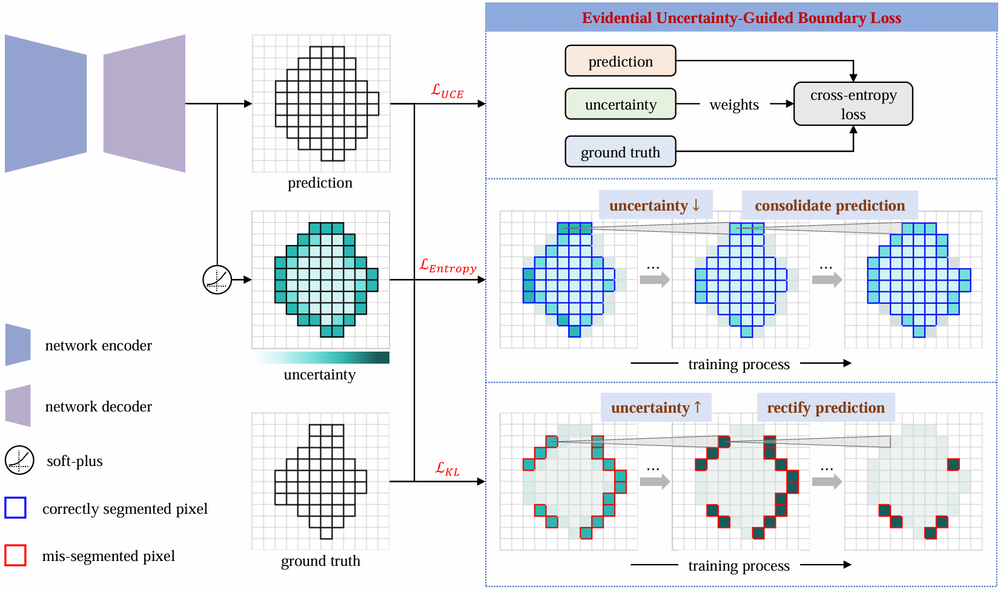
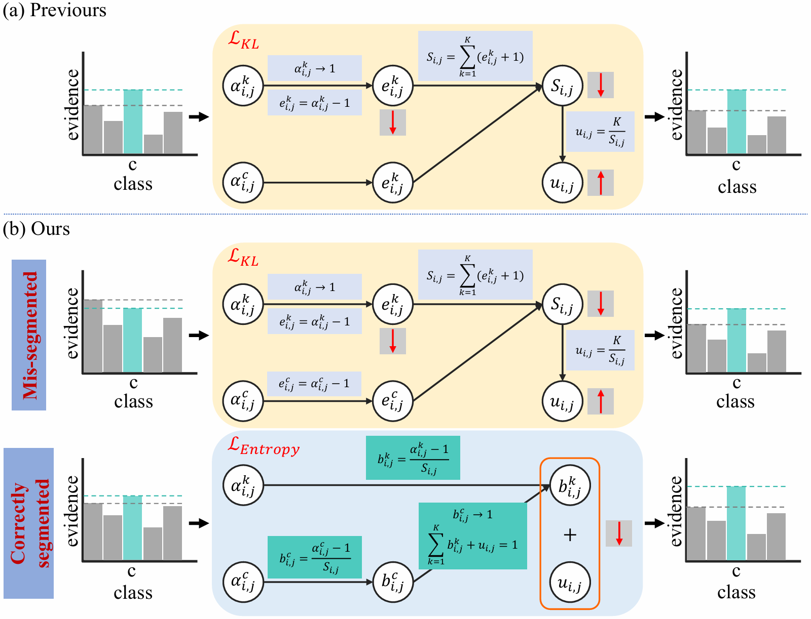
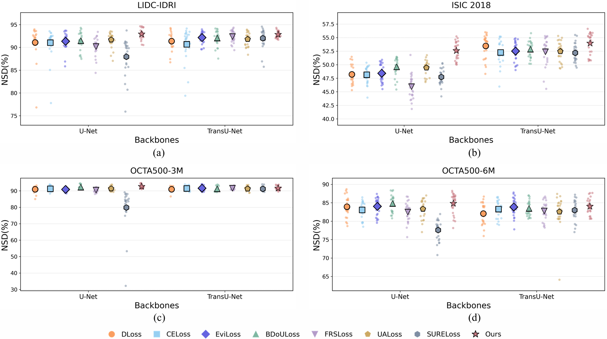
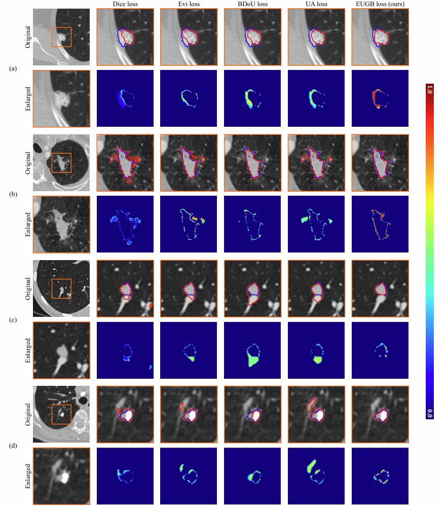

Exploring the Connection between Uncertainty and Tissue Boundaries in Medical Image Segmentation
Abstract
Automatic medical image segmentation, as a prerequisite for clinical quantitative analysis, forms the basis of computer-aided diagnosis. However, blurry object boundaries caused by factors such as imaging quality and inherent physiological properties of tissues or lesions are the main causes of imprecise segmentation. This aligns with the common understanding that high uncertainty and misclassification tend to occur at boundaries in segmentation. To address the challenge, we investigate this phenomenon and explore the connection between uncertainty and tissue boundaries by analysing various tissues. Then an Evidential Uncertainty-Guided Boundary (EUGB) loss is further proposed to demonstrate that uncertainty information can indeed facilitate combating boundary segmentation errors. The proposed EUGB loss not only emphasizes challenging pixels along blurry boundaries using evidential uncertainty, but also introduces a regularization term that constrains uncertainty learning by penalizing incorrect predictions and reinforcing correct ones. The effectiveness of the proposed EUGB loss is verified in the public LIDC-IDRI, ISIC 2018, and OCTA-500 datasets with two classic medical image segmentation networks (U-Net and TransU-Net). Experimental results demonstrate that the proposed loss outperforms seven other segmentation loss functions in terms of boundary segmentation, while maintaining competitive region-level segmentation accuracy. Beyond introducing a new loss function, this paper provides empirical insights for selecting appropriate loss functions across different application scenarios. We systematically analyze the strengths and limitations of existing losses from multiple perspectives, including reliability and dataset characteristics. This analysis offers practical insights that enable researchers and practitioners to optimize segmentation performance based on specific data attributes.
Method
In this paper, we delve into the phenomenon that uncertainty and mis-segmentation often occur at boundaries, providing empirical evidence to support this observation. The empirical analysis demonstrates that uncertainty offers a promising alternative for improving boundary segmentation in medical images. Uncertainty can serve as a natural indicator of unreliable boundary predictions and actively contribute to the optimization process, rather than functioning solely as an evaluation tool for quantifying model uncertainty. Therefore, Evidential Uncertainty-Guided Boundary (EUGB) loss is proposed to exert the potential of uncertainty information in facilitating boundary segmentation. The EUGB loss consists of two components: the Uncertainty-weighted Cross-Entropy (UCE) loss and the uncertainty-based regularization term.
(1) Uncertainty-weighted cross-entropy loss. Pixel-wise evidential uncertainty is naturally integrated into the pixel-wise cross-entropy (CE) loss to emphasize boundary pixels with high uncertainty.
(2) Uncertainty-based regularization. This regularization term employs distinct optimization schemes for correctly segmented and mis-segmented pixels, constraining the uncertainty learning to better align with the objective of boundary segmentation. Specifically, it consists of $\mathcal{L}_{Entropy}$ and $\mathcal{L}_{KL}$, which encourage low uncertainty for correct predictions and high uncertainty for incorrect predictions, respectively.

Pipeline of the proposed evidential uncertainty-guided boundary (EUGB) loss. $\mathcal{L}_{UCE}$ emphasizes challenging boundary pixels through evidential uncertainty, while the regularization term $\mathcal{L}_{Reg}$, composed of $\mathcal{L}_{Entropy}$ and $\mathcal{L}_{KL}$, encourages low uncertainty for correct predictions and high uncertainty for incorrect predictions.

Schematic comparison of the regularization terms in previous Evi loss and the proposed EUGB loss. $c$ in the diagram denotes the correct class of a given pixel, while $k\ (k\neq c)$ represents the remaining classes. (a) The KL divergence term in Evi loss treats all pixels uniformly during optimization. (b) The proposed EUGB loss employs distinct optimization schemes for correctly segmented and mis-segmented pixels, constraining the uncertainty learning from the perspective that better aligns with the objective of boundary segmentation.
Experiments
The effectiveness of EUGB loss is verified on three public datasets with two medical image segmentation networks through extensive experiments. Experimental results demonstrate that the proposed loss exhibits superior boundary segmentation performance while maintaining competitive region-level segmentation accuracy.
Quantitative Results on LIDC-IDRI
| Method | U-Net | TransU-Net | ||||||
|---|---|---|---|---|---|---|---|---|
| DC (%) ↑ | JC (%) ↑ | HD95 (mm) ↓ | ASSD (mm) ↓ | DC (%) ↑ | JC (%) ↑ | HD95 (mm) ↓ | ASSD (mm) ↓ | |
| Dice loss | 85.19±2.64* | 76.68±2.86 | 4.77±1.55* | 1.49±0.42* | 85.95±1.49 | 77.10±1.78 | 4.50±1.53* | 1.51±0.52* |
| CE loss | 84.20±2.33* | 75.36±2.85* | 5.22±3.82* | 1.57±0.81* | 84.22±3.62* | 75.18±4.24 | 4.81±2.77* | 1.55±0.73* |
| Evi loss | 84.73±2.12* | 76.09±2.33* | 4.58±1.28* | 1.49±0.33* | 85.79±1.53 | 77.17±1.70 | 3.63±0.63* | 1.25±0.17 |
| BDoU loss | 84.64±2.06* | 76.16±2.22* | 4.26±1.20* | 1.36±0.28* | 85.85±1.83 | 77.18±1.93 | 4.12±1.60* | 1.36±0.50* |
| FRS loss | 83.30±2.02* | 74.48±2.10* | 5.10±1.54* | 1.63±0.39* | 86.22±1.60 | 77.53±1.81 | 3.95±0.96* | 1.29±0.30 |
| UA loss | 85.06±2.32* | 76.39±2.50* | 4.86±1.60* | 1.49±0.39* | 85.03±2.64* | 76.35±2.52* | 3.89±1.07* | 1.33±0.41* |
| SURE loss | 80.81±4.16* | 71.91±4.25* | 6.97±2.82* | 2.23±0.94* | 85.94±2.03 | 77.27±2.29 | 4.24±1.98* | 1.36±0.49 |
| EUGB loss (Ours) | 86.51±1.12 | 78.09±1.20 | 3.54±1.12 | 1.16±0.23 | 86.56±0.81 | 77.90±0.95 | 3.26±0.41 | 1.14±0.12 |
Performance (mean ± standard deviation) of different methods for nodule segmentation on the LIDC-IDRI dataset.
Bold indicates the best result; underlined indicates the second-best result. ↑ denotes higher is better; ↓ denotes lower is better.
* The performance of EUGB loss is significantly different from the marked method (p < 0.05).
Quantitative Results on ISIC 2018
| Method | U-Net | TransU-Net | ||||||
|---|---|---|---|---|---|---|---|---|
| DC (%) ↑ | JC (%) ↑ | HD95 (mm) ↓ | ASSD (mm) ↓ | DC (%) ↑ | JC (%) ↑ | HD95 (mm) ↓ | ASSD (mm) ↓ | |
| Dice loss | 86.09±0.51* | 78.07±0.58* | 17.59±0.65* | 6.38±0.24* | 89.41±0.53* | 82.52±0.67* | 11.91±0.80 | 4.67±0.35* |
| CE loss | 86.40±0.55* | 78.66±0.57* | 16.69±0.82* | 5.90±0.19* | 89.14±0.53* | 82.10±0.67* | 12.28±0.76* | 4.71±0.33* |
| Evi loss | 86.46±0.48* | 78.74±0.48* | 16.60±1.05* | 5.86±0.28* | 89.32±0.49* | 82.29±0.60* | 12.15±0.72* | 4.61±0.30* |
| BDoU loss | 86.95±0.51* | 79.33±0.51* | 16.73±0.85* | 5.84±0.22* | 89.36±0.39* | 82.39±0.47* | 12.05±0.80* | 4.57±0.26* |
| FRS loss | 84.33±1.10* | 76.29±1.15* | 17.98±0.74* | 6.46±0.33* | 89.07±1.57* | 82.05±1.82* | 12.32±1.49* | 4.68±0.60* |
| UA loss | 86.79±0.44* | 79.16±0.42* | 16.39±0.80* | 5.77±0.17* | 89.25±0.65* | 82.26±0.73* | 12.16±0.93* | 4.63±0.33* |
| SURE loss | 84.55±0.61* | 76.45±0.74* | 22.75±1.62* | 7.38±0.37* | 88.93±0.87* | 81.87±1.07* | 12.46±1.28* | 4.79±0.42* |
| EUGB loss (Ours) | 87.84±0.42 | 80.55±0.45 | 15.24±0.79 | 5.45±0.25 | 89.64±0.46 | 82.79±0.54 | 11.71±0.73 | 4.48±0.27 |
Performance (mean ± standard deviation) of different methods for skin lesion segmentation on the ISIC 2018 dataset.
Bold indicates the best result; underlined indicates the second-best result. ↑ denotes higher is better; ↓ denotes lower is better.
* The performance of EUGB loss is significantly different from the marked method (p < 0.05).
Quantitative Results on OCTA-500
| Dataset | Method | U-Net | TransU-Net | ||||||
|---|---|---|---|---|---|---|---|---|---|
| DC (%) ↑ | JC (%) ↑ | HD95 (mm) ↓ | ASSD (mm) ↓ | DC (%) ↑ | JC (%) ↑ | HD95 (mm) ↓ | ASSD (mm) ↓ | ||
| OCTA-3M | Dice loss | 96.79±0.62* | 94.13±0.96* | 7.35±2.31 | 1.27±0.47* | 96.57±0.50* | 93.59±0.86* | 6.97±2.28* | 1.32±0.44* |
| CE loss | 96.74±0.91* | 94.15±1.23* | 6.84±2.16 | 1.11±0.33 | 96.69±0.60 | 93.79±1.01 | 6.86±2.46* | 1.31±0.49* | |
| Evi loss | 96.43±1.05* | 93.70±1.26* | 7.32±2.56* | 1.28±0.46* | 96.43±1.01* | 93.50±1.36* | 6.77±2.33 | 1.29±0.44 | |
| BDoU loss | 97.15±0.73 | 94.80±1.06 | 7.03±2.54 | 1.13±0.42 | 96.69±0.56 | 93.84±0.90 | 6.86±2.44* | 1.26±0.49 | |
| FRS loss | 96.25±1.00* | 93.36±1.22* | 7.69±2.50* | 1.32±0.43* | 96.67±0.79 | 93.81±1.08 | 6.95±2.39* | 1.35±0.49* | |
| UA loss | 96.80±0.85* | 94.26±1.02* | 6.95±1.94 | 1.15±0.33 | 96.56±0.64* | 93.54±1.12* | 6.72±3.16 | 1.32±0.60* | |
| SURE loss | 93.03±4.13* | 88.09±6.42* | 13.72±3.64* | 2.76±1.07* | 96.51±0.50* | 93.46±0.85* | 6.31±2.57 | 1.24±0.45 | |
| EUGB loss (Ours) | 97.23±0.59 | 94.95±0.81 | 6.84±2.58 | 1.09±0.42 | 96.80±0.43 | 93.99±0.74 | 6.30±2.42 | 1.21±0.48 | |
| OCTA-6M | Dice loss | 90.17±2.74 | 85.00±3.14* | 10.79±4.50* | 2.42±0.95* | 90.44±1.63* | 84.40±2.10* | 11.43±4.70* | 2.60±0.96* |
| CE loss | 89.58±2.53* | 84.18±2.79* | 8.47±2.73 | 2.04±0.49 | 91.26±1.30 | 85.39±1.74 | 9.98±3.90* | 2.22±0.69* | |
| Evi loss | 89.47±2.47* | 84.18±2.79* | 9.25±3.02* | 2.20±0.51* | 91.22±1.41 | 85.31±1.83 | 8.37±2.67 | 2.04±0.53 | |
| BDoU loss | 90.16±2.95 | 85.38±3.21 | 10.09±4.23* | 2.31±0.93* | 91.16±1.39 | 85.44±1.72 | 9.29±3.71* | 2.11±0.72 | |
| FRS loss | 89.03±2.40* | 83.38±2.79* | 9.65±3.26* | 2.36±0.69* | 91.02±1.43 | 84.95±1.87* | 10.39±4.02* | 2.33±0.70* | |
| UA loss | 89.67±2.51* | 84.25±2.87* | 8.59±3.19 | 2.06±0.64 | 91.01±1.72 | 85.02±2.33 | 8.84±3.14 | 2.08±0.50 | |
| SURE loss | 87.55±1.98* | 80.52±2.30* | 23.54±6.69* | 4.90±1.37* | 90.83±1.38* | 84.64±1.84* | 8.50±3.69 | 2.20±0.84 | |
| EUGB loss (Ours) | 90.57±2.59 | 85.63±3.13 | 7.88±2.96 | 1.85±0.68 | 91.38±1.25 | 85.71±1.70 | 7.96±2.32 | 1.89±0.45 | |
Performance (mean ± standard deviation) of different methods for FAZ segmentation on the OCTA-500 dataset.
Bold indicates the best result; underlined indicates the second-best result. ↑ denotes higher is better; ↓ denotes lower is better.
* The performance of EUGB loss is significantly different from the marked method (p < 0.05).
Distribution of Normalized Surface Dice

Qualitative Results
